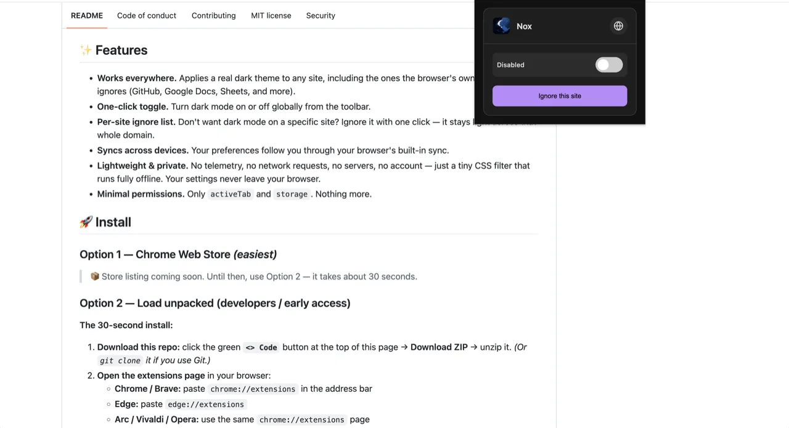
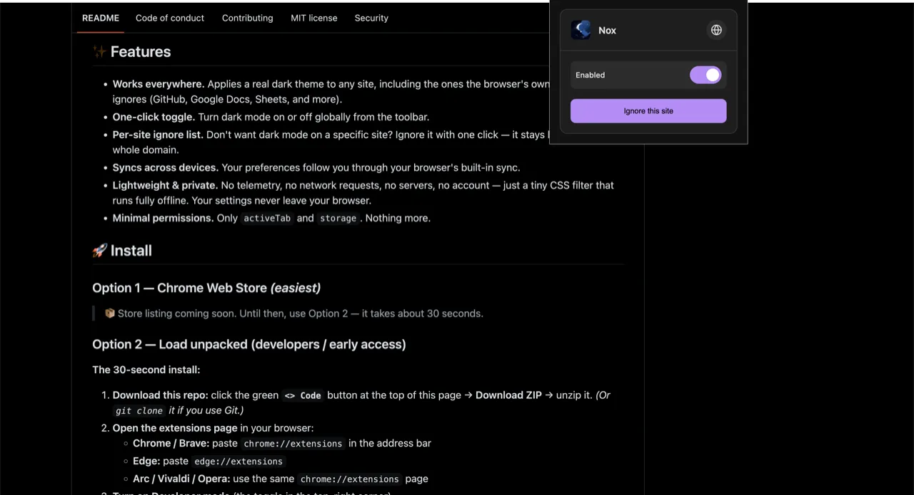

Dark mode that actually works
Force dark mode on every website.
Chrome, Edge and Brave all ship a dark-mode toggle, but it silently fails on GitHub, Google Docs, Sheets and more. Nox fixes that: one click and any page goes dark, properly.
- Chrome
- Edge
- Brave
- Arc
- Vivaldi
- Opera
- 100% offline
- No Ads, No Tracking
- MIT licensed


-
Open source Full source code on GitHub, MIT licensed. Anyone can read it, audit it, or self-host it.
-
Private by design No accounts, no tracking, no analytics. Your data never leaves your browser.
-
Lightning fast One GPU-composited CSS filter. You won't notice any impact on browser performance.
-
Secure & offline Runs 100% offline with only two permissions. Nothing to phish, nothing to phone home.
Your browser's dark mode gives up on the sites you use most.
Built-in dark mode relies on sites cooperating. The ones that don't (GitHub, Google Docs, Google Sheets, and countless others) stay bright no matter what you toggle. Nox applies a real dark theme itself, so it works everywhere the browser can't.
Fast, private, and it actually works.
🌐 Works everywhere
A real dark theme on any site, including the ones the browser's dark mode ignores.
⚡ One-click toggle
Turn dark mode on or off globally, straight from the toolbar.
🚫 Per-site ignore
Don't want dark on a specific site? Ignore it with one click; that domain stays light.
🔄 Syncs across devices
Your preferences follow you through your browser's built-in sync.
🔒 Lightweight & private
No telemetry, no network requests, no servers, no account, just a tiny CSS filter that runs fully offline.
🧩 Minimal permissions
Only
activeTabandstorage. Nothing more.
Install in 30 seconds
-
1
Download & unzip
Click Download the extension (.zip) below and unzip it.
-
2
Load unpacked
Open
chrome://extensions(Edge:edge://extensions), turn on Developer mode, click Load unpacked, and pick the unzipped folder. -
3
Pin & enjoy
Pin Nox 📌 to your toolbar, click the icon, and every page goes dark.
Private by design.
Nox makes no network requests, ships no telemetry, runs on
no servers, and needs no account. Your settings never leave
your browser. It's a Dark Reader alternative that works fully offline, and only asks for
activeTab and storage permissions.
Speaks your language
Nox already ships in 11 languages and follows your browser's language automatically. More are on the way, and you can help add yours.
- English
- Español
- Français
- Deutsch
- Português (BR)
- Русский
- العربية
- हिन्दी
- বাংলা
- 日本語
- 简体中文
Frequently asked questions
Does Nox work on GitHub, Google Docs and Google Sheets?
Yes. Nox applies a real dark theme to any site, including the ones the browser's built-in dark mode ignores.
Is Nox private?
Completely. No network requests, no telemetry, no servers, no account. Your settings never leave your browser.
Why does Nox exist, and is it safe to use?
Most dark-mode extensions are closed source, and many quietly send your data to external servers. Nox was built to be the opposite: fully open source under the MIT license, running entirely inside your browser with no network access at all. Nothing about you or your browsing ever leaves your device.
Does it slow down my browser?
No. A single GPU-composited CSS filter, toggled by one class. No loops, observers or polling. Fully offline.
Which browsers are supported?
Any Chromium browser: Chrome, Edge, Brave, Arc, Vivaldi, Opera. Firefox is not yet supported.
How do I install it?
Download the repo, open chrome://extensions, enable Developer mode, click Load unpacked, and select the folder. About 30 seconds.
What languages does Nox support?
Nox ships in 11 languages — English, Spanish, French, German, Portuguese (Brazil), Russian, Arabic, Hindi, Bengali, Japanese, and Simplified Chinese — and follows your browser's language automatically. More are added by the community over time.
Nox is built in the open. Come help shape it.
Nox is a free, open-source community project. Whether you write code or just speak another language, there's a meaningful way to contribute.
💻 Improve Nox
Found a bug, or have a feature in mind? Open an issue or send a pull request. Small fixes and big ideas are equally welcome, and the codebase is small and friendly.
🌍 Translate Nox
Nox already reaches users in 11 languages. If yours is missing or could read more naturally, add it. Translating is just editing one JSON file, no coding required.